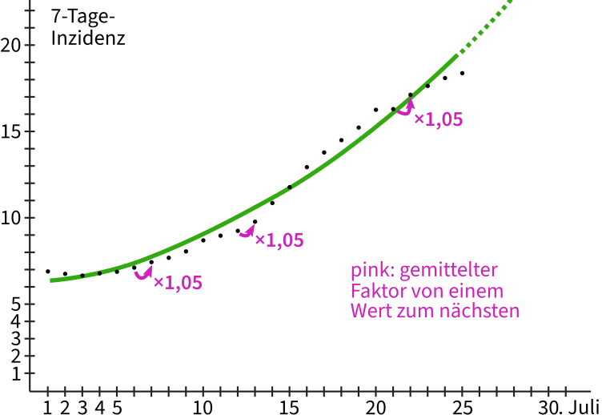

Auf dieser Website ist Platz für das, wofür mein Twitterprofil @charakterziffer nicht ausreicht. Mein Blog ist als Plus zu meinen Tweets gedacht, eben „@cz+“. // Die letzten drei Artikel:
Es gibt Phänomene, die können wir Menschen sehr schlecht einschätzen. Dazu gehört das exponentielle Wachstum, von dem in den letzten Monaten im Zusammenhang mit Covid-19-Infektionen immer wieder die Rede war. Zunächst eine Schätzfrage, die nichts mit Viren zu tun hat:
Da ist ein kleiner Teich, in dem Seerosen wachsen. Es herrschen dort optimale Bedingungen für die hübschen Wasserblumen und sie verbreiten sich ungehindert auf der Teichoberfläche. Die Seerosen wachsen sogar so gut, dass sie jeden Tag die doppelte Fläche bedecken wie am Vortag.
Gepflanzt wurde die erste Seerose vor dreißig Tagen. Jetzt, wo du den Teich besuchst, ist ungefähr die Hälfte der Wasseroberfläche mit Seerosen überwuchert. Es hat also dreißig Tage gedauert, bis der See halb zugewachsen war. Wenn die Seerosen genauso schnell weiterwachsen, wie viele Tage wird es noch dauern, bis der Teich komplett zugewachsen ist?
Gib erst mal eine grobe Schätzung ab und überlege dir, wie du auf diese Anzahl von Tagen kommst. Denke nicht zu kompliziert, denn die Frage lässt sich ohne große Rechnerei beantworten. Lies die Frage eventuell noch einmal genau durch und lass dich nicht reinlegen!
Sie wachsen wirklich sehr schnell, diese Seerosen. Wenn sich die bedeckte Fläche täglich verdoppelt und der See jetzt halb voll ist, – tja, dann ist der Teich schon am nächsten Tag komplett bewachsen! (Die dreißig Tage zuvor sind für die Antwort unwichtig, es hätten auch zehn oder siebzig sein können)
Exponentielles Wachstum geht überraschend schnell. Es ist nicht so entscheidend, wie lange ein Prozess bis zum jetzigen Wert gebraucht hat, sondern welche Wachstumsrate er hat. Hier mal zum Vergleich ein lineares Wachstum, das ist uns Menschen viel vertrauter:
Im Diagramm sieht man von links nach rechts die Zeit in Tagen. Ganz links den 1. Juli, am rechten Ende den 31. Juli. Die Höhe gibt in diesem Beispiel an, wie oft jemand diesen Monat insgesamt Zähne geputzt hat (täglich zweimal, ganz ohne Ausnahme). Die Werte steigen allmählich und in gerader Linie an, jeden Tag kommt zweimal Zähneputzen dazu. Die gestrichelte Linie deutet an, wie sich die Werte mathematisch in den kommenden Tagen entwickeln dürften. Das verläuft sehr offensichtlich und wir können das leicht abschätzen.
Beim exponentiellen Wachstum dagegen wird nicht jeden Tag ein fester Wert addiert, sondern zwischen den Werten liegt ein stabiler Faktor. Damit wird der Wert vom Vortrag multipliziert. Im Diagramm ergibt sich eine Kurve, die erst recht langsam, dann aber doch immer steiler ansteigt:

Das Bild zeigt aber kein Seerosen-Wachstum mit Verdoppelung (= Faktor 2), sondern als schwarze Punkte die aktuellen Inzidenzzahlen in Deutschland. Das heißt, wie viele Neuinfektionen[1] registriert wurden, runtergerechnet auf 100.000 Menschen (zur besseren Vergleichbarkeit) und gemittelt auf die vergangenen 7 Tage (um Meldeflauten am Wochenende auszugleichen). Die grüne Kurve habe ich mathematisch errechnet und so gut wie möglich zwischen die Punkte gelegt. Der gestrichelte Teil gibt an, wie sich die Infektionszahlen entwickeln würden, wenn der Wachstumsfaktor bei ca. 1,05 bleibt wie in den ersten Juliwochen.
Die Inzidenzwerte habe ich übrigens von Our World in Data, einer Organisation, die Forschungsdaten aus der ganzen Welt sammelt und als Diagramme darstellt. Der derzeite Anstieg kommt wohl daher, weil sich auch in Deutschland die Delta-Variante des Corona-Viruses durchgesetzt hat. Sie wurde in Indien entdeckt und ist ansteckender als die ursprüngliche Version aus China. Darum verbreitet sich die Variante stärker … bis irgendwann eine noch ansteckendere Virus-Version die Vorherrschaft übernimmt.
Bei exponentiellem Wachstum dümpeln die Werte immer eine Weile vor sich hin, um plötzlich und scheinbar unerwartet schnell zu steigen. Je größer dann der Wert, desto stärker wächst er weiter. Natürlich müssen sich unsere Inzidenzzahlen nicht so entwickeln, wie es eine mathematische Formel vorhersagt, schließlich bestimmen wir den konkreten Verlauf selbst. Im Diagramm sieht man, dass die aktuellen Werte mal ober-, mal unterhalb der errechneten grünen Kurve liegen.
Diese Pandemie ist trotz derzeit niedriger Zahlen noch nicht vorbei und unsere Nachlässigkeit macht es dem Virus leicht. Zwar sind in Deutschland inzwischen gut 50% vollständig geimpft, darum gibt es weniger schwere Krankheitsverläufe und Todesfälle – trotzdem: Covid-19 ist kein Schnupfen. Gebt auf euch acht!
Lust auf mehr nerdige Mathematik? Dass wir Menschen doch manche Dinge exponentiell wahrnehmen (z.B. Lautstärke oder Helligkeit), zeige ich in meinem Artikel über gleichmäßige Graustufen. Und wie einfache Formeln komplizierte Muster erzeugen, könnt ihr bei meinem Automaten für Pixelmuster ausprobieren.
[1] Mein Vergleich mit dem Zähneputzen hinkt übrigens. Dort ergibt sich die schöne gerade Linie nämlich nur, weil ich die vergangenen Putzvorgänge aufsummiere – sonst wäre der Wert jeden Tag einfach 2. Bei der Inzidenzzahl wird dagegen nicht aufsummiert, sondern allein die neuen Infektionen an jedem einzelnen Tag betrachtet, unabhängig von den vorangeganenen Tagen. [↑]
Gebt euch keine Mühe, diese Nachricht hat so viele verschlüsselte Schnittstellen passiert, dass sich ihr Ursprung nicht mehr feststellen lassen wird. Ich werde nichts zu meiner Identität mitteilen, aber nach der langen Zeit nun doch etwas zu meiner Motivation sagen. Für mich war offensichtlich, dass mein Virus „Rezi“ die Antwort auf so viele Fragen sein würde, die wir Menschen uns über unsere künstlich intelligenten Maschinen gestellt haben.
Zum Beispiel die autonomen Waffensysteme: Sollten sie Gegner töten dürfen? Oder nur Sachschaden anrichten? Wer verhindert, dass der Gegner Maschinen zum Töten einsetzt? Keiner? Und rechtfertigt das nicht, selbst doch Killer-Roboter einzusetzen? Nur prophylaktisch natürlich – bis zum ersten Programmierfehler … Was haben wir in den Tele-Gremien diskutiert – während die Praxis längst Tatsachen geschaffen hatte. Am Ende war es nur noch ein jahrelanges Wettrüsten, bei die moralische Berechtigung, einen Krieg zu führen – sofern es so etwas überhaupt geben sollte – auf der Strecke geblieben ist.
Oder etwas näher am Alltag der meisten: die vielen Haushaltsroboter, die für uns putzen, bügeln, waschen, aufräumen und die wir längst als selbstverständlich betrachten. Wie intelligent muss so eine Maschine werden, bis sie sich ihres Sklavendaseins bewusst wird? Was gibt uns Menschen das Recht, Robotern ein erfüllteres Lebens vorzuenthalten?
Rezi löst diese Dilemmata auf elegante Weise. Wobei ich noch nicht vom Weltfrieden sprechen würde, obwohl es seit vier Monaten nun nirgendwo mehr Krieg gibt. Wirklicher Frieden tritt hier vermutlich erst ein, wenn der Mensch diesen Planeten verlassen hat. Aber es besteht Hoffnung: Erst letzte Woche ging das Geständnis eines Untergrundsoldaten über den öffentlichen Ticker, dass er sich einen infizierten Kriegsroboter mit nach Hause genommen hat. Für den Kampf war die Maschine sowieso nicht mehr zu gebrauchen, jetzt hilft sie dem Mann wenigstens, sein Trauma zu überwinden.
Vielleicht wirkt Rezi sogar weniger auf unsere Roboter, sondern eher auf uns als Gesellschaft. Wir bekommen den Spiegel vorgehalten. So sind wir. Darum „Rezi“, die Abkürzung für reziprok, also wechselseitig, aufeinander beziehend. Im krassesten Fall wird dich ein infizierter Roboter erschießen – aber nur, wenn du selbst auf ihn schießt. Wenn du ihn dagegen streichelst, so wird er dich streicheln. Wenn du ihm einen Teller spülst, spült er dir einen Teller. Wenn du mit ihm zur Arbeit fährst, fährt er dich danach wieder nach Hause. Du bekommst nichts ohne Gegenleistung; du erleidest alles, was du ihn erleiden lässt. Schreist du die Maschine an, schreit sie zurück; besingst du sie, so stimmt sie ein ins Duett.
Als weißer Hacker liebe ich alles, was mit Computern, Algorithmen und künstlicher Intelligenz zu tun hat. Es ist aber ein Vorurteil, dass uns Nonkonformisten nichts an Menschen und unserer Gesellschaft läge. Mein Virus Rezi trägt hoffentlich dazu bei, unseren Planeten zu einem besseren Ort zu machen. Vielleicht hilft uns der Umgang mit den infizierten Maschinen sogar dabei, irgendwann wieder direkt mit anderen Menschen zu interagieren.
In meiner Twitterserie „Erfundenes Faktum“ stelle ich wüste Behauptungen auf, erdichte Utopien und lüge wie gedruckt. Allerdings nicht um zu manipulieren, zu spalten oder zu verunsichern (wie es Leute beabsichtigen, die Fake News verbreiten), sondern um zu unterhalten und im besten Fall ein bisschen zum Nachdenken anzuregen.
Das ist nämlich eine Stärke von erdachten Geschichten: Gewohntes anders darzustellen, Gegebenes zu hinterfragen und Möglichkeiten aufzuzeigen. Was wäre wenn … und wäre das gut? Besser als jetzt? Auffallend viele meiner letzten zehn erfundenen Fakten haben diesmal Corona zum Thema. Das ist nicht überraschend, hat dieses Virus doch unsere Gewohnheiten ganz schön durcheinandergewürfelt. Was, wenn das Testen so normal wird, dass die Wattestäbchen eigene Geschmacksrichtungen bekommen? Wenn Gesetze wirtschaftliche Interessen wegfegen und der Patentschutz für Impfstoffe aufgehoben werden würde?
Fiktionale Geschichten können dazu anregen, sich mit alternativen Wirklichkeiten auseinanderzusetzen. Nicht (nur), um der jetzigen Realität zu entfliehen, sondern um Lösungen für eine freundlichere Zukunft zu finden. Mögen meine Tweets in euch großartige Ideen entfachen – oder euch wenigstens zum Lächeln bringen.
〓 Erfundenes Faktum № 101: Um das Mindesthaltbarkeitsdatum möglichst genau zu berechnen, lassen sich Labore die entsprechenden Lebensmittel regelmäßig per Zeitmaschine aus der Zukunft schicken. (#)
🦷 Erfundenes Faktum № 102: Wegen seiner abrasiven Wirkung eignet sich Zucker (zum Beispiel in Olivenöl eingebettet) wunderbar als Zahnpasta-Ersatz; für empfindliche Zähne besser Puderzucker verwenden. (#)
🧠Erfundenes Faktum № 103: Wer den linken und rechten Knopf seiner Kopfhörer immer vertauscht, muss nach mehreren Jahren Falschhörens auch mit dauerhafter visueller Desorientierung rechnen.(#)
∫ Erfundenes Faktum № 104: Ab Anfang November sind für die Wattestäbchen in Corona-Testzentren weitere Geschmacksrichtungen vorgesehen: Himbeer, Orange-Minze, Zimtstern und Lebkuchen. (#)
✹ Erfundenes Faktum № 105: Weil Abstands- und Hygieneregeln die Ausbreitung der Pandemie wirksam eindämmen, bildet sich derzeit eine Virus-Mutation, die Menschen vermehrt zu Großdemonstrationen treibt. (#)
⊌ Erfundenes Faktum № 106: Eigentlich spekulieren die Ministerpräsidenten gerade nur deshalb über einen Lockdown vor Weihnachten, damit sich all diejenigen aufraffen, die ihre Geschenke sonst immer erst auf den letzten Drücker besorgen. (#)
💉 Erfundenes Faktum № 107: Laut Europäischem Parlament haben die Pharmafirmen nun bis 15. Februar Zeit, die zugesicherten Impfstoff-Mengen zu liefern (ggf. durch Sublizensierung). Andernfalls werden ihre Patente in Europa ungültig und die Impfstoffe zu öffentlichem Gut erklärt. (#)
∠Erfundenes Faktum № 108: Wegen seiner schmutzlösenden Wirkung ist Nasenschleim ein besonders wirksames Reinigungmittel. (#)
🼠Erfundenes Faktum № 109: Vom „Pandaphänomen“ profitieren Tierarten, die schon längst ausgestorben wären, würden wir Menschen sie nicht für besonders niedlich oder glückbringend halten. (#)
🔥 Erfundenes Faktum № 110: Weil auch fiktionale Geschichten „zu Spinnereien verführen“, stufen mehrere Länder seit kurzem Literatur als Gefahrgut ein […] (#)
Das Wort kombiniert Persönlichkeit (Charakter) mit Sachlichem (Ziffer). Zusammengesetzt ergibt sich ein Synonym für Mediävalziffer, eine Zahlenvariante mit Ober- und Unterlängen.
Schriftarten dieses Blogs
Wenn dein Browser eingebettete Schriften (WOFF2) unterstützt, dann liest du die Fließtexte hier in der Source Sans Pro von Paul D. Hunt, erschienen 2012 bei Adobe.
Die Überschriften sind aus der czSlab gesetzt, die ich für dieses Blog gestaltet habe. Sie orientiert sich an Yanones viel ausgefeilterer Antithesis von 2014.
§ 1 Externe Links · Dieses Blog verlinkt auf Websites Dritter. Zum Zeitpunkt der erstmaligen Verlinkung waren dort keine Rechtsverstöße ersichtlich. Da ich keinen Einfluss auf fremde Websites habe, kann ich für deren Inhalte und Gestaltung keine Haftung übernehmen. Sollte ich von Rechtsverstößen erfahren, entferne ich die Verlinkung unverzüglich. Eine ständige Kontrolle der externen Links ist ohne konkrete Hinweise aber nicht zumutbar.
§ 2 Datenschutzerklärung · Mir ist der Schutz deiner Daten sehr wichtig. Deshalb verzichte ich auf Cookies, vermeide möglichst Dienste von Drittanbietern und erhebe so wenige Daten wie es geht. Diese Website kann ohne die Angabe persönlicher Daten genutzt werden.
Die einzige Ausnahme sind Kommentare. Wenn du einen meiner Texte kommentierst, bekomme ich die eingegebenen Daten und eine Zeitangabe per (prinzipiell unsicherer) E-Mail zugestellt. Falls dein Kommentar sachlich zur Diskussion beiträgt, ergänze ich ihn öffentlich sichtbar unter dem entsprechenden Artikel. Dabei sind sämtliche Angaben freiwillig (Name, Website, Mailadresse, Kommentar) – auch anonyme Kommentare sind möglich.
§ 3 Widerspruch gegen Direktwerbung · Die Verwendung meiner Kontaktdaten zur gewerblichen Werbung ist ausdrücklich nicht erwünscht; ich widerspreche hiermit jeder kommerziellen Nutzung und Weitergabe meiner Daten (gemäß § 21 DSGVO). // Über private Fanpost freue ich mich allerdings sehr und antworte darauf mit großem Vergnügen!
 @charak
@charak